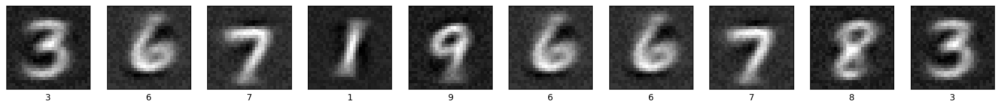

Hybrid Predictive Coding¤

This notebook demonstrates how to train a hybrid predictive coding network (Tschantz et al., 2023) that can both generate and classify MNIST digits.
import jpc
import jax
import jax.numpy as jnp
import equinox as eqx
import equinox.nn as nn
import optax
import torch
from torch.utils.data import DataLoader
from torchvision import datasets, transforms
import matplotlib.pyplot as plt
import warnings
warnings.simplefilter('ignore') # ignore warnings
Hyperparameters¤
We define some global parameters, including the network architecture, learning rate, batch size, etc.
SEED = 0
INPUT_DIM = 10
WIDTH = 300
DEPTH = 3
OUTPUT_DIM = 784
ACT_FN = "relu"
LEARNING_RATE = 1e-3
BATCH_SIZE = 64
MAX_T1 = 50
TEST_EVERY = 100
N_TRAIN_ITERS = 300
Dataset¤
Some utils to fetch MNIST.
def get_mnist_loaders(batch_size):
train_data = MNIST(train=True, normalise=True)
test_data = MNIST(train=False, normalise=True)
train_loader = DataLoader(
dataset=train_data,
batch_size=batch_size,
shuffle=True,
drop_last=True
)
test_loader = DataLoader(
dataset=test_data,
batch_size=batch_size,
shuffle=True,
drop_last=True
)
return train_loader, test_loader
class MNIST(datasets.MNIST):
def __init__(self, train, normalise=True, save_dir="data"):
if normalise:
transform = transforms.Compose(
[
transforms.ToTensor(),
transforms.Normalize(
mean=(0.1307), std=(0.3081)
)
]
)
else:
transform = transforms.Compose([transforms.ToTensor()])
super().__init__(save_dir, download=True, train=train, transform=transform)
def __getitem__(self, index):
img, label = super().__getitem__(index)
img = torch.flatten(img)
label = one_hot(label)
return img, label
def one_hot(labels, n_classes=10):
arr = torch.eye(n_classes)
return arr[labels]
def plot_mnist_imgs(imgs, labels, n_imgs=10):
plt.figure(figsize=(20, 2))
for i in range(n_imgs):
plt.subplot(1, n_imgs, i + 1)
plt.xticks([])
plt.yticks([])
plt.grid(False)
plt.imshow(imgs[i].reshape(28, 28), cmap=plt.cm.binary_r)
plt.xlabel(jnp.argmax(labels, axis=1)[i])
plt.show()
Train and test¤
Similar to a standard PC network, a hybrid model can be trained in a single line of code with jpc.make_hpc_step(). Similarly, we can use jpc.test_hpc() to compute different test metrics. Note that these functions are already "jitted" for optimised performance. Below we simply wrap each of these functions in training and test loops, respectively.
def evaluate(
key,
layer_sizes,
batch_size,
generator,
amortiser,
test_loader
):
amort_accs, hpc_accs, gen_accs = 0, 0, 0
for _, (img_batch, label_batch) in enumerate(test_loader):
img_batch, label_batch = img_batch.numpy(), label_batch.numpy()
amort_acc, hpc_acc, gen_acc, img_preds = jpc.test_hpc(
key=key,
layer_sizes=layer_sizes,
batch_size=batch_size,
generator=generator,
amortiser=amortiser,
input=label_batch,
output=img_batch
)
amort_accs += amort_acc
hpc_accs += hpc_acc
gen_accs += gen_acc
return (
amort_accs / len(test_loader),
hpc_accs / len(test_loader),
gen_accs / len(test_loader),
label_batch,
img_preds
)
def train(
seed,
input_dim,
width,
depth,
output_dim,
act_fn,
batch_size,
lr,
max_t1,
test_every,
n_train_iters
):
key = jax.random.PRNGKey(seed)
key, *subkey = jax.random.split(key, 3)
layer_sizes = [input_dim] + [width]*(depth-1) + [output_dim]
generator = jpc.make_mlp(
subkey[0],
input_dim=input_dim,
width=width,
depth=depth,
output_dim=output_dim,
act_fn=act_fn
)
# NOTE: input and output are inverted for the amortiser
amortiser = jpc.make_mlp(
subkey[1],
input_dim=output_dim,
width=width,
depth=depth,
output_dim=input_dim,
act_fn=act_fn
)
gen_optim = optax.adam(lr)
amort_optim = optax.adam(lr)
optims = [gen_optim, amort_optim]
gen_opt_state = gen_optim.init(
(eqx.filter(generator, eqx.is_array), None)
)
amort_opt_state = amort_optim.init(eqx.filter(amortiser, eqx.is_array))
opt_states = [gen_opt_state, amort_opt_state]
train_loader, test_loader = get_mnist_loaders(batch_size)
for iter, (img_batch, label_batch) in enumerate(train_loader):
img_batch, label_batch = img_batch.numpy(), label_batch.numpy()
result = jpc.make_hpc_step(
generator=generator,
amortiser=amortiser,
optims=optims,
opt_states=opt_states,
input=label_batch,
output=img_batch,
max_t1=max_t1
)
generator, amortiser = result["generator"], result["amortiser"]
gen_loss, amort_loss = result["losses"]
if ((iter+1) % test_every) == 0:
amort_acc, hpc_acc, gen_acc, label_batch, img_preds = evaluate(
key,
layer_sizes,
batch_size,
generator,
amortiser,
test_loader
)
print(
f"Iter {iter+1}, gen loss={gen_loss:4f}, "
f"amort loss={amort_loss:4f}, "
f"avg amort test accuracy={amort_acc:4f}, "
f"avg hpc test accuracy={hpc_acc:4f}, "
f"avg gen test accuracy={gen_acc:4f}, "
)
if (iter+1) >= n_train_iters:
break
plot_mnist_imgs(img_preds, label_batch)
return amortiser, generator
Run¤
network = train(
seed=SEED,
input_dim=INPUT_DIM,
width=WIDTH,
depth=DEPTH,
output_dim=OUTPUT_DIM,
act_fn=ACT_FN,
batch_size=BATCH_SIZE,
lr=LEARNING_RATE,
max_t1=MAX_T1,
test_every=TEST_EVERY,
n_train_iters=N_TRAIN_ITERS
)
Iter 100, gen loss=0.617566, amort loss=0.052470, avg amort test accuracy=74.719551, avg hpc test accuracy=81.500404, avg gen test accuracy=81.390221,
Iter 200, gen loss=0.573021, amort loss=0.052784, avg amort test accuracy=80.669067, avg hpc test accuracy=82.341743, avg gen test accuracy=82.331734,
Iter 300, gen loss=0.531935, amort loss=0.041603, avg amort test accuracy=82.121391, avg hpc test accuracy=83.022835, avg gen test accuracy=83.203125,
